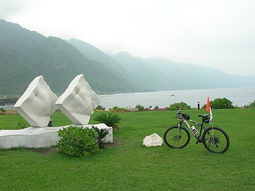
在小獅與blue的精心策劃下，花東之行，總算得以成行，而於民國97年4月10日早上6點在鳳山集合，搭車直奔花蓮，中午並在鹽寮「龍蝦海鮮餐廳」用餐 。原先預計用餐後，再搭車至花蓮遊客中心開始騎車，因當日天氣陰冷，且下著雨，所以臨時決定直接從鹽寮出發，當天一路途經陡崖跳浪（水璉）、蕃薯寮遊憩區、笆崎眺望台（牛山、石山），路程雖然不遠，但因為穿著雨衣一路爬坡，卻也是另一種考驗，不過速度超出原先預期，接近傍晚4日點的時候，就已經抵達位於磯崎的「後湖水月」民宿。
。原先預計用餐後，再搭車至花蓮遊客中心開始騎車，因當日天氣陰冷，且下著雨，所以臨時決定直接從鹽寮出發，當天一路途經陡崖跳浪（水璉）、蕃薯寮遊憩區、笆崎眺望台（牛山、石山），路程雖然不遠，但因為穿著雨衣一路爬坡，卻也是另一種考驗，不過速度超出原先預期，接近傍晚4日點的時候，就已經抵達位於磯崎的「後湖水月」民宿。
在後湖水月民宿經過一晚的充分休息後，早上近8點自後湖水月出發，途經豐濱、石梯坪遊客中心、長虹橋（秀姑巒溪出海口）、八仙洞遊客中心、長濱（兼食用午餐）、石雨傘、三仙台遊客中心、成功港、東岸國家風景管理處遊客中心（都歷）、東河、金樽眺望台、水往上流（都蘭）、杉源海水浴場，後來在接近富岡漁港途中，blue的鐵騎不幸爆胎 ，因而終點改在富岡漁港的「美娥海產店」。
，因而終點改在富岡漁港的「美娥海產店」。
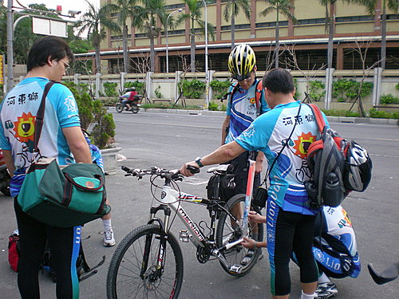
4月10日早上在鳳山集合
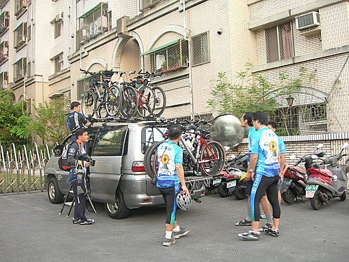
開始將鐵騎上車架
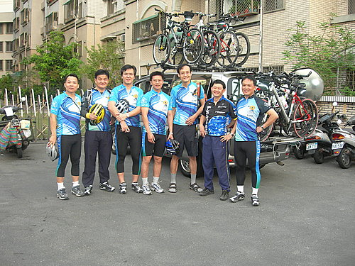
出發前的合影，並由吳大哥（右二）負責本次遠征的後勤
補給
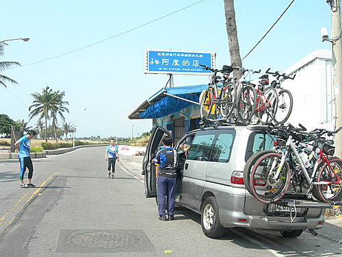
到達台東「阿度的店」，稍作休息。這也是原本預定抵達
的終點站，但事後因為隊友的車子出了一些狀況而改變計
畫
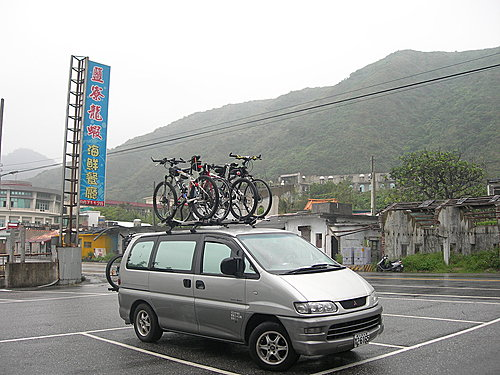
抵達鹽寮「龍蝦海鮮餐廳」，當時尚下著雨。
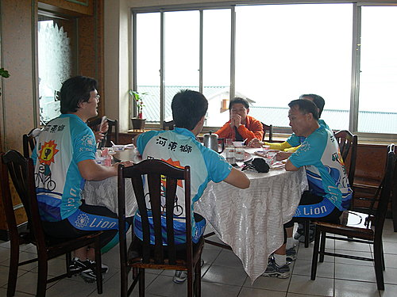
出發前，還是要飽餐一頓。這是在鹽寮「龍蝦海鮮餐廳」
的用餐實況。
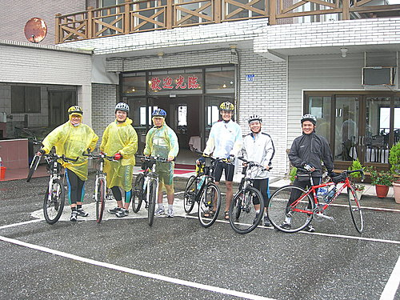
即使下著雨，還是決定出發。
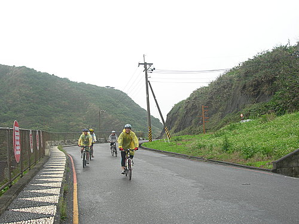
快要抵達「後湖水月」的騎車實況
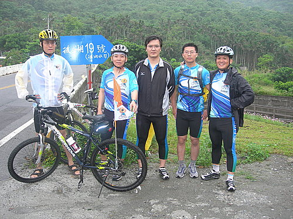
比預期的時間早抵達「後湖水月」
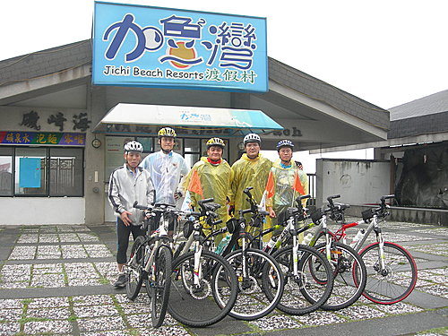
因為時間尚早，就再繞一繞，這裡是「加魯灣度假村」。
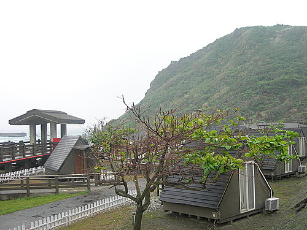
加魯灣的小木屋
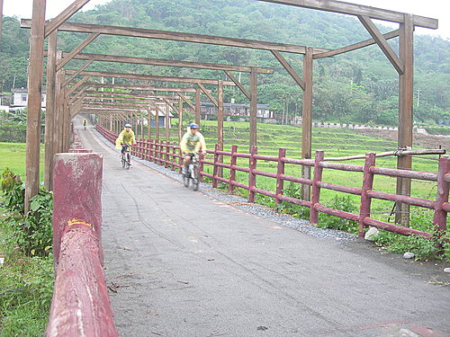
離開加魯灣，又繞到後湖水月附近的海灘
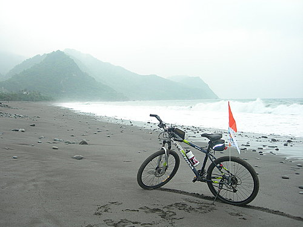
車與海
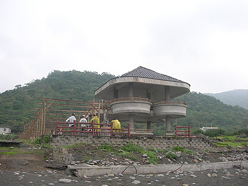
岸邊休息
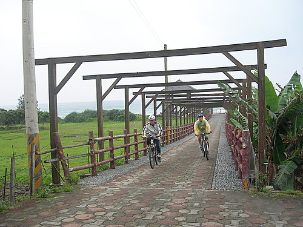
返回後湖水月
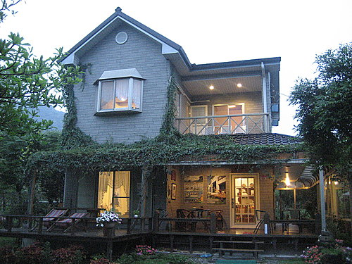
後湖水月主要建物的外觀
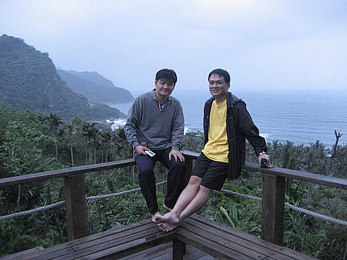
後湖水月可眺望海景的樓台
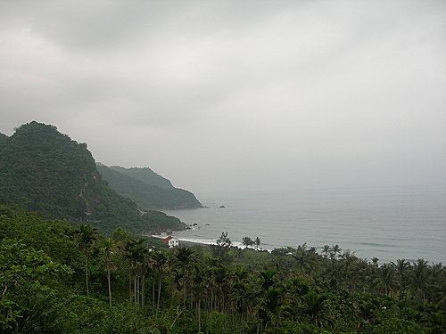
從後湖水月觀看海景
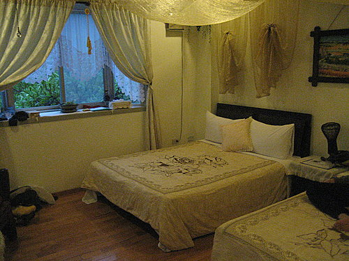
後湖水月的房間
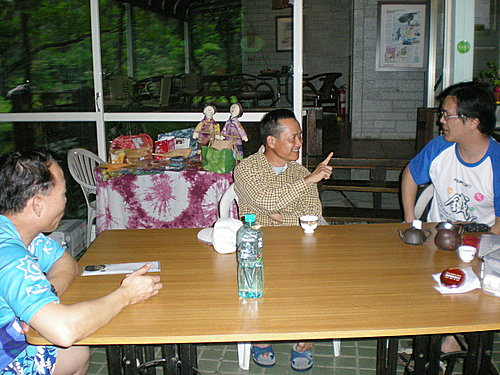
晚餐後，在大廳與民宿老闆（中）閒聊
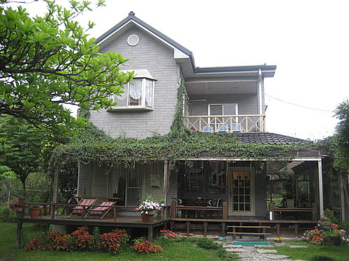
早晨觀看後湖水月的景象
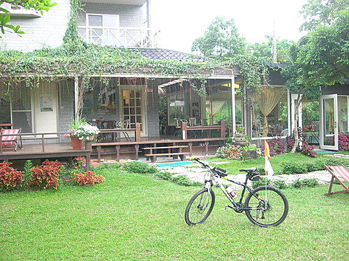
庭院草皮
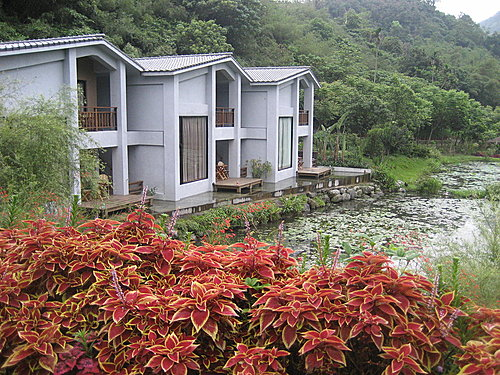
池塘邊的Villa
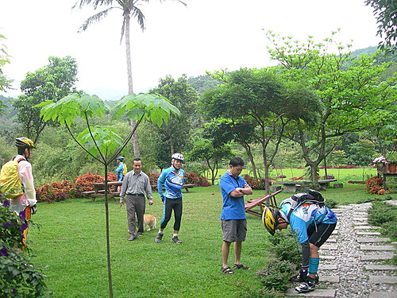
早晨人員集結，準備出發
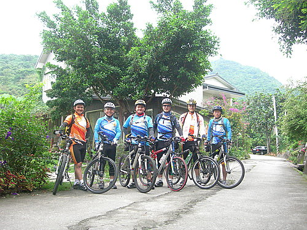
離開後湖水月前的合照
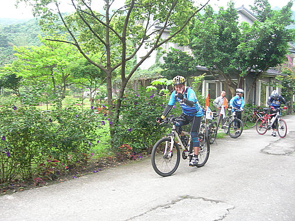
小超領先出發
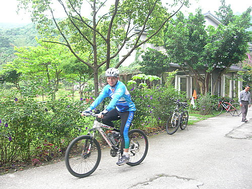
blue也跟上
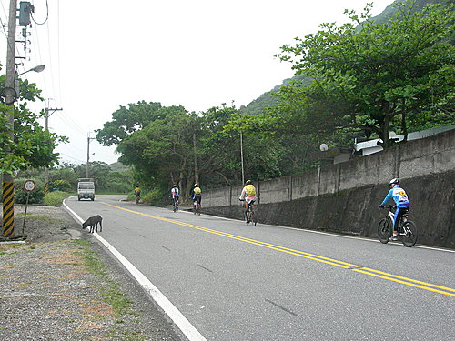
下坡滑行
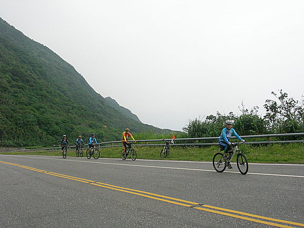
爬坡
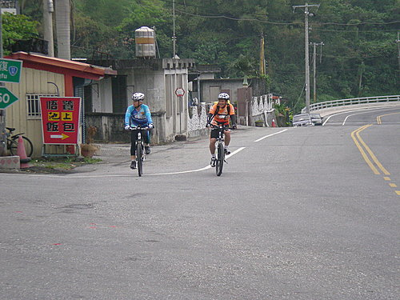
blue與小獅騎車接近豐濱
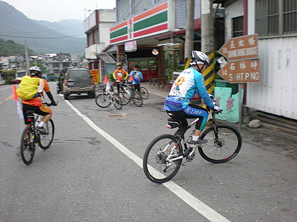
人員在豐濱的便利商店集結
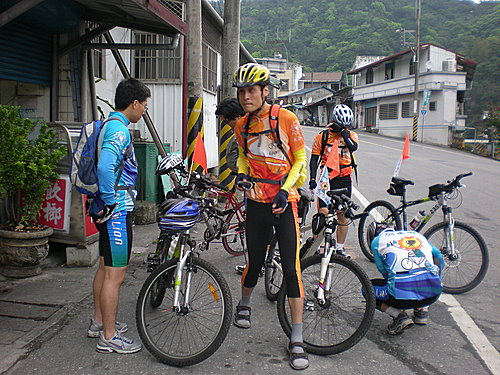
略作停留與休息
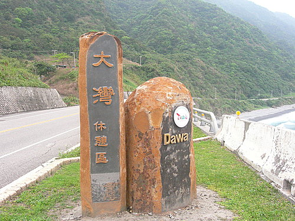
抵達大灣休憩區
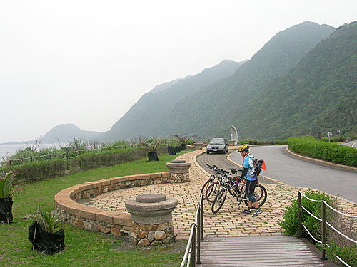
停放車輛
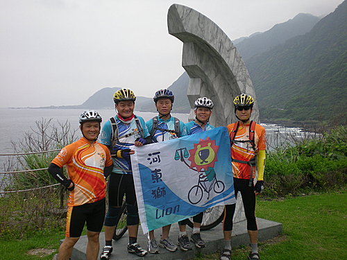
拍照留念
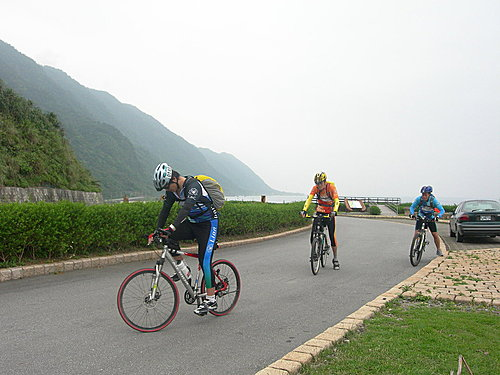
離開大灣休憩區，朝下個目標前進
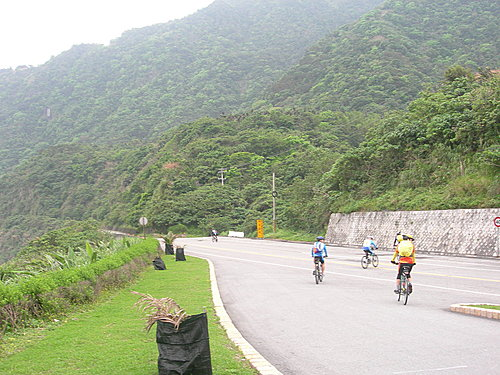
當天天候陰暗，氣候涼爽，大夥速度都很快，有些人已經
不見人影
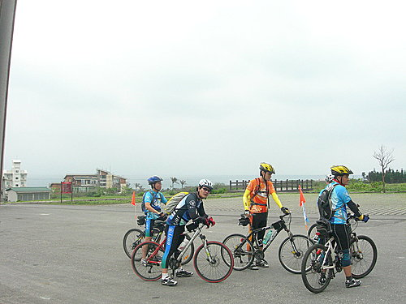
石梯坪遊客中心
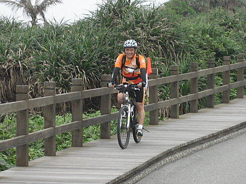
石梯坪的步道
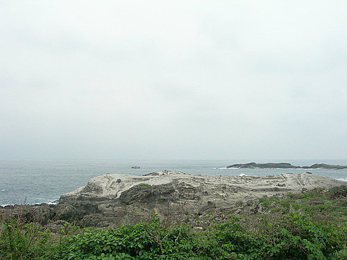
石梯坪的海景
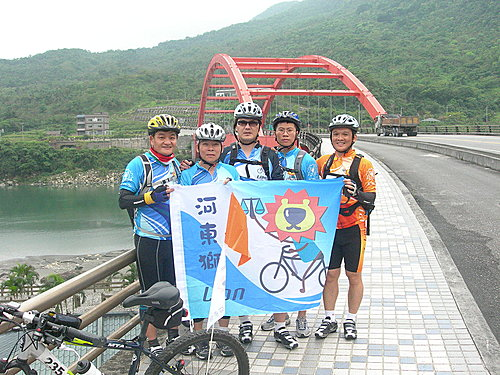
長虹橋
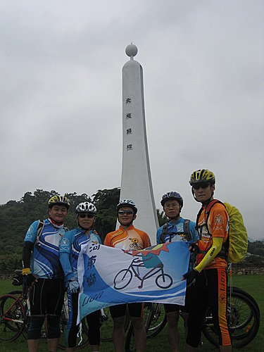
北迴歸線
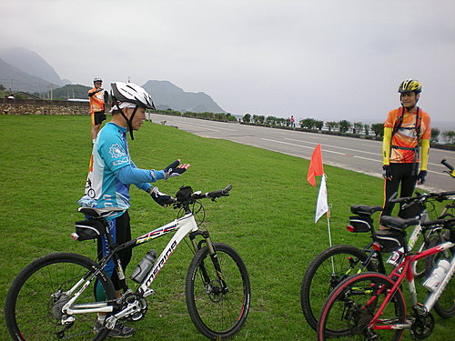
準備離開
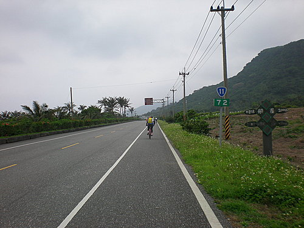
衝刺
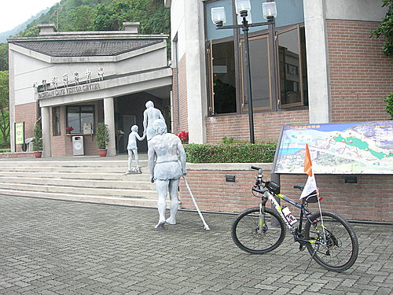
八仙洞遊客中心
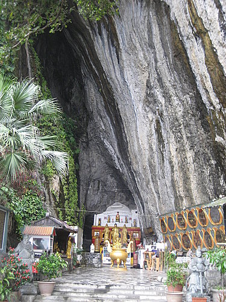
八仙洞
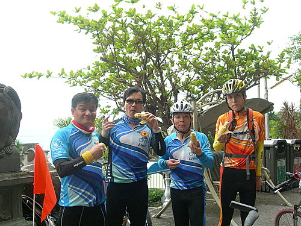
品嚐一下玉米的滋味
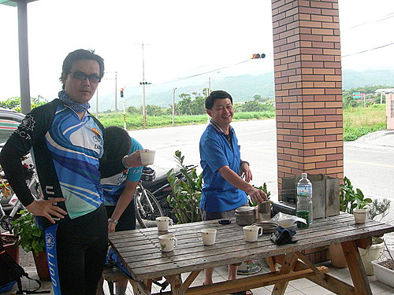
抵達長濱的時候，吳大哥已經泡好茶等我們了
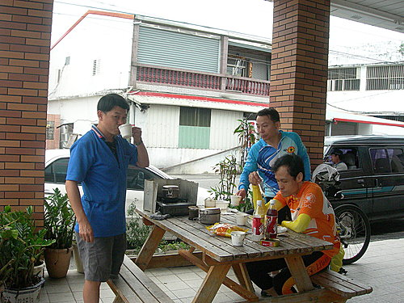
在便利商店買午餐食用
到達石雨傘
將車停放整齊
石雨傘就是中間那塊很像香菇的石頭
遠看石雨傘
全隊合照
中間那位是在石雨傘碰到車友
這裡是三仙台
在三仙台合影
鐵騎繼續停放在拍照的三仙台遊客中心內
三仙台景觀
這是橋上
吳大哥也到三仙台會合
躺在碎石沙灘上休息
blue真的累了，都不起來
半屏橋是單日騎乘達100公里的里程碑
為抵達的小獅拍照留念
慶祝單日行進100公里
到了東河
當然要吃一下東河包子
在接近富岡漁港時，因為發生爆胎事件，終
點臨時改在「美娥海產店」。
這就是我們的晚餐
小泓把我們的花東行寫的又深入又有趣，看的過程我笑了好幾回，又覺得自己好幸運，可以和好朋友一起享受東海岸的美景。想必車友看了本篇花東行報導後，以後報名參加類似活動的人一定大爆滿。小泓以後要多麻煩你了。下次新中橫72公里挑戰賽還是你寫？或是換小揚了？ 小超